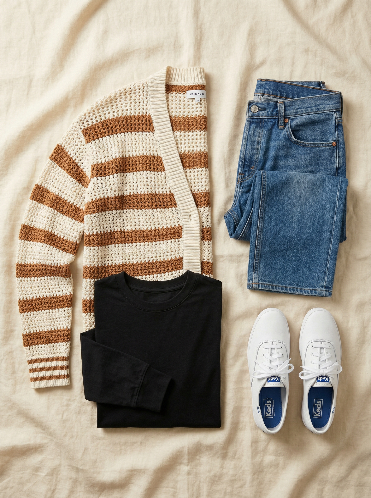
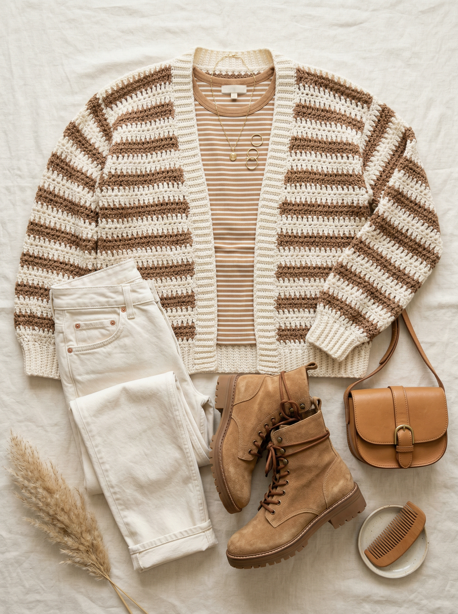
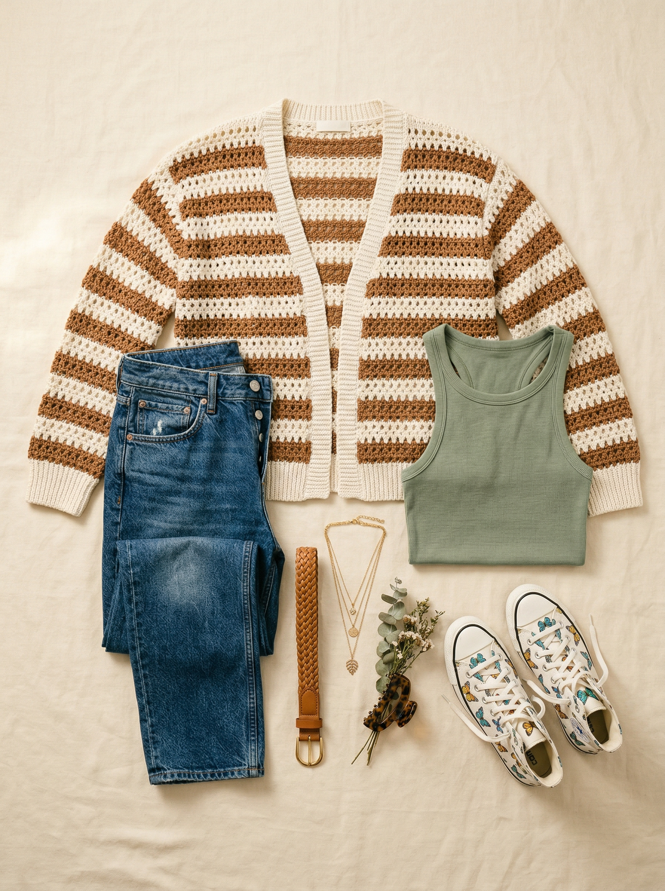

Open-Stitch Striped Crochet Cardigan
The open-stitch crochet cardigan is THE spring and summer layering piece of 2026. 100% cotton means it breathes beautifully in Texas heat, and the warm brown/ivory stripe adds personality without being loud. It makes a basic tank and jeans look like an intentional outfit. 337 people added it to bag in a single week.
Shop NowWhy This Pick
You have almost no casual layers — just hoodies. A crochet cardigan is the spring/summer layer you're missing. Open-stitch means it's breathable enough for DFW spring weather, and the warm brown/ivory stripe adds color and texture to even your simplest outfits. 100% cotton keeps it washable and practical. This is the piece that makes a tank and jeans look like a real outfit.
3 Ways to Wear It
Styled with pieces already in your closet


